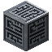
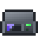
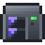
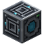

Networks: pages
Networks
Network Controllers
The Network Controller structure (its shapes, energy and lanes), its Network screen, the rack and Midrange controllers, and what happens when two controllers meet.
On this page
Every network runs from one controller structure. It's the network's lane source, its main energy buffer, and the thing the network is discovered from. There are three kinds:
| Controller | What it is | Where it's documented |
|---|---|---|
 Network Controller | A block. Touching blocks form one structure. | This page |
 2U Network Controller, 4U Network Controller | Rack devices in a | Below, and Rack devices |
| A Midrange System is its own network's controller. | Below, and The Midrange line |
The Network Controller#
A single Network Controller block is a complete controller. Place more against it and they merge into one structure, which shares one energy buffer and adds up its lanes. Blocks of one structure join their textures once the structure is valid and more than one block.
Shapes#
Touching controller blocks form a valid structure when they are exactly the edges of a box no bigger than controller.maxSize (default 7) blocks along any axis. In practice:
| Shape | Valid? | Blocks |
|---|---|---|
| A single block | Yes | 1 |
| A straight line, up to the size limit long | Yes | 2 or more |
| A 2×2×2 cube | Yes (every block is an edge) | 8 |
| A flat ring, such as 3×3 with the middle empty | Yes | 8 |
| A hollow frame (edges only), such as 3×3×3 | Yes | 20 |
| A filled face, such as a solid 3×3 wall | No: "Invalid structure" | |
| A frame with an edge block missing | No: "Invalid structure" | |
| Anything longer than the limit on an axis | No: "Too large" |
A box's frame has 4 × (x + y + z) − 16 blocks once every side is at least 2. Any box 1 or 2 wide on an axis is all edges on that axis, so a filled 2×2×5 block is valid too.
Screenshot needed
A 3x3x3 hollow frame of 20 Network Controller blocks, formed (joined textures) and online (lit), with a cable leaving one corner, next to a single controller block for comparison
docs/site-src/images/networks/controller-frame.png · 1600x900
An invalid structure doesn't run: its devices are offline, its blocks show the error, and right-clicking one shows the reason in red above the hotbar instead of opening the screen.
Energy#
Each controller block adds controller.energyPerBlock (default 25,000) FE to the structure's buffer and accepts up to controller.maxReceivePerBlock (default 4096) FE per tick on its faces. Every face of every block takes FE (it only takes, never gives): FE pushed into one block fills that block first and then spills into the rest of the structure. While the network runs, the structure drains controller.drainPerBlock (default 2) FE per tick per block, on top of everything else on the network.
The buffer is only part of the network's energy: Capacitor Banks and Energy Storage Drives add to it, and a  Power Inlet is the usual way in. See Power.
Power Inlet is the usual way in. See Power.
Lanes#
Each controller face that touches something on the network (a cable, a Power Inlet, a device) adds lanes.perControllerFace (default 32) lanes to the network's capacity. Faces between two controller blocks don't count. A single block with cables on all six faces has six faces' worth of lanes, though each cable still carries only its own tier's lanes. A larger structure gives you more faces to run cables from. See Lanes.
The Network screen#
Right-click any block of a valid structure to open its Network screen:
- an energy gauge and the status line (Online, No power, or what's wrong);
- lanes used and the capacity;
- Stored, Usage and Received: the network's stored FE, its drain per tick, and the FE that came in, averaged over the last second;
- the structure: "3x3x3 frame, 20 blocks" or "Single block";
- a scrolling grid of every kind of device on the network, with how many there are, their drain, and how many are missing a lane or have no power.
Screenshot needed
The Network screen of a mid-sized network: status Online, the energy gauge about two-thirds full, lanes such as 14 / 64, Stored, Usage and Received figures, the structure line, and a device grid with several types, one tooltip open showing Installed, Passive drain and Missing lane
docs/site-src/images/networks/controller-screen.png · 1280x720
A comparator against any controller block reads the whole network's stored energy, 0 when empty and 1 to 15 as it fills.
Statuses#
| Status | Meaning | Devices |
|---|---|---|
| Online | Valid, powered, one controller. | Online if they have their lanes |
| No power | The network's stored energy is empty. | All offline |
| Invalid structure | The controller blocks aren't the edges of a box. | All offline |
| Too large | The structure is over controller.maxSize on an axis. | All offline |
| Multiple controllers | Two controller structures on one network: see conflicts. | All offline |
| Failover | A rack controller pair is switching over (rack controllers only). | Keep their lanes |
Conflicts: one controller per network#
A network may have only one controller structure. When the network that one controller discovers reaches the controller of another structure, through cables or through a remote link (a paired  Point-to-Point Link, a wireless link or an optical channel), the network is in conflict: its status is Multiple controllers, no device gets a lane, and nothing on it works until one of the controllers is removed or the connection is cut.
Point-to-Point Link, a wireless link or an optical channel), the network is in conflict: its status is Multiple controllers, no device gets a lane, and nothing on it works until one of the controllers is removed or the connection is cut.
The same applies across kinds. These are all conflicts:
- controller blocks from two or more separate structures;
- a Network Controller structure and a rack Network Controller (or a Midrange System);
- two Midrange Systems, or a Midrange System and any other controller;
- more than two rack Network Controllers, or two of different sizes (a 2U with a 4U).
Two rack Network Controllers of the same size aren't a conflict: they're a redundant pair.
To join two networks that each have a controller, remove one of the controllers, or keep them as separate networks and move things between them with a Router or an L3 Switch (see Networking). To divide one network on purpose, use a  Segment Isolator: each side then needs its own controller. See Segments.
Segment Isolator: each side then needs its own controller. See Segments.
Bridging two powered networks
Pairing a Network Bridge, a lanes Point-to-Point Link or a wireless link between two networks that both have a controller takes both offline at once. Pair across to a network with no controller of its own.
Rack Network Controllers#
The 2U Network Controller and 4U Network Controller are the controller in rack form: installed in a  Server Rack, they make the whole rack a lane source and the network's energy buffer.
Server Rack, they make the whole rack a lane source and the network's energy buffer.
- A 2U has the energy buffer, receive rate and drain of
rack.rackController2uEnergyBlocks(default 20) controller blocks, and the lanes ofrack.rackController2uLaneFaces(default 6) controller faces. A 4U has twice both. - The rack's lanes are one budget shared by everything that draws on the rack, and the rack hands them out to its uplinks (the cables leaving it).
- Two of the same size on one network are a redundant pair: one active, one on standby drawing
rack.rackControllerStandbyFactor(default 0.1) of its drain. If the active one can't run, the standby takes over; the network shows Failover while it does.
The details, the panel and its Switch over button are on Rack devices and Server Rack.
The Midrange System as a controller#
A  Midrange System is its own network's controller, so a Midrange network needs no Network Controller (and mustn't have one). It hands out the lanes of
Midrange System is its own network's controller, so a Midrange network needs no Network Controller (and mustn't have one). It hands out the lanes of rack.midrangeLaneFaces (default 4) controller faces and holds the energy of rack.midrangeEnergyBlocks (default 4) controller blocks. An Integrated Midrange System has the lanes of rack.integratedMidrangeLaneFaces (default 6) faces and the energy of rack.integratedMidrangeEnergyBlocks (default 20) blocks. A Midrange System that meets another controller shows the status code E8. See The Midrange line.